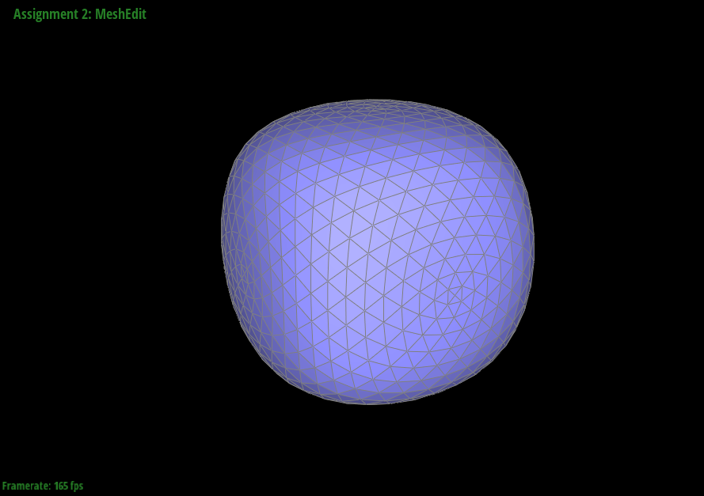

Overview
Give a high-level overview of what you implemented in this project. Think about what you've built as a whole. Share your thoughts on what interesting things you've learned from completing the project.
Section I: Bezier Curves and Surfaces
Part 1: Bezier curves with 1D de Casteljau subdivision
De Casteljau's Algorithm is one way to generate Bezier curves. Given n control points and some value t (between 0.0 and 1.0),
we are able to generate a point for each value of t that lies on a curve defined by the control points.
To implement de Casteljau's Algorithm, we need to start with the original set of control points.
For a given set P containing n amount of control points, P[0] and P[n-1] define the starting and ending positions of the curve.
Every point is used to define the curve, but points between P[0] and P[n-1] may not necessarily lie on the curve.
De Casteljau's algorithm recursively generates smaller sets of intermediate points through iterations using value t.
In each iteration with k amount of points in the current set,
we sequentially take point i and point i + 1 for i in (0 through k-2) and linearly interpolate between the two points using t to obtain a new point.
The next iteration will recurse with the k-1 points we just obtained and this procedure will repeat until we eventually obtain a single final point.
Finally, we combine all final points generated by de Casteljau from the same set of control points over all continuous values of t to obtain the entire curve.
Example
Here is an example of de Casteljau's algorithm evaluated step-by-step on six original points (white) until a single final point (red) that lies on the curve is evaluated for any given t value, which is 0.5 in this case. If we repeat this algorithm for all values of t between 0.0 and 1.0, then the green curve will be obtained.
|
|

|
|
|

|
|
|

|
If we move the original control points and modify t, we can see the difference how it generates different intermediate points thus resulting in a different final point which also lies on the respective curve that it creates.

|
Part 2: Bezier surfaces with separable 1D de Casteljau subdivision
Casteljau's Algorithm extends to Bezier surfaces because we can apply the same procedure to interpolate between sets of 1D curves by using points on each curve.
This would return to us a 2D structure.
To implement, recall from Part 1 that de Casteljau's algorithm takes n control points and generates a 1D curve.
Now if we have m amount of 1D curves and take a point proportional to some value u between 0.0 and 1.0 from each of those curves,
then we have a new set of m control points that we can apply de Casteljau's algorithm to.
If we apply de Casteljau's algorithm over values v between 0.0 and 1.0 to the m points obtained from the original 1D curves for each value u,
we obtain a Bezier surface.
Example
Here, we can see a teapot made of several Bezier surfaces which are each in turn made from Bezier curves.

|
Section II: Sampling
Part 3: Average normals for half-edge meshes
As mentioned in lecture, per-vertex normal vectors are important for shading at the vertex and pixel frequency levels.
One way to generate such vectors without knowing the underlying geometry is by inferring it through the normals of the surrounding faces (the faces that contain the vertex).
For each vertex, I created the area-weighted vertex normal by traversing through every surrounding face using the half-edge data structure
and computing the area and normal vectors for each face by taking the cross product of (v2-v1, v3-v1) with v1, v2, v3 being the corresponding vertices
to get the normal and dividing the magnitude of the normal by 2 to get the area.
These vectors are then summed and normalized, giving us a vertex normal that is weighted by each surrounding face's area.
Example
Here, we can see a teapot shaded with and without vertex normals.
|
|

|
Part 4: Half-edge flip
In order to implement the edge flip operation, we must obtain the target edge and all the vertices, half-edges, and faces that are involved in the flip. Since the half-edge data structure allows us to easily traverse the mesh, we can quickly obtain references for all of the elements above. The half-edge data structure also implies that the mesh is connected primarily through half-edges.First, we want to properly set the half-edge pointer of each vertex, edge, and face to a possibly different half-edge that it now corresponds to. Most notably, this is when a vertex becomes an endpoint for the newly flipped edge. Then, we want to fix the half-edges so that they point to the (possibly) new next half-edge, twin, vertex, edge, and face. This is particularly true for half-edges belonging to the flipped edge.
Since we are only implementing edge flipping in this part, many of the updates are not needed as we do not add/remove elements. Throughout the task, I found that roughly half of the elements did not require much updating. Fortunately, I only ran into one bug which was due to a typo so I did not need to go on a debugging adventure
Example
Here, we can see a teapot before and after with edge flipping.
|
|
|
Part 5: Half-edge split
In order to perform an edge split, we first obtain references to the original relevant vertices, faces, edges, and half-edges.
In addition to the current references, we must also create a new vertex, two new faces, three new edges, and six new half-edges.
The reason we only need to create three new edges instead of four is because the original edge does not need to be deleted and we can simply "shrink" it to be our fourth edge.
These new elements are combined with the original elements to give us a total of four faces, four edges, five vertices, and twelve half-edges to update.
We can now procedurally update each element similarly to part 4. For the faces, edges, and vertices, we properly set their half-edge pointers.
For the half-edges, we properly set their next, twin, vertex, edge, and face pointers.
Note that in an edge split, there will be more significant updates to original elements since many elements such as half-edges will correspond to new next half-edges, faces, etc.
During implementation, I fortunately did not need to go on any debugging journeys as keeping the code clean and organized allowed me to keep good track of pointers during reassignments.
Boundary edges are also not supported.
Example
Teapot before and after edge splits/flips
|
|
|
|
|
|
Part 6: Loop subdivision for mesh upsampling
Loop subdivision is a method used to upscale a polygon mesh, that is, to increase the number of polygons by subdividing each triangle.
In our case, perform a 4-1 subdivision which splits each original triangle into four smaller triangles.
The procedure for loop subdivision differs from implementation and is summarized as follows.
First, for each triangle, we create three vertices at each edge's midpoint and connect them to each other.
Then, we update each vertex (including the new vertices) to a weighted average of neighboring vertices following using specific weights.
Implementation
In implementation however, we first compute the position of each vertex and store it in a newPosition variable. The reason for this is because traversing the mesh to obtain the position of the neighboring vertices is easier if we traverse before performing subdivision. For original vertices, we traverse using the half-edges to reach all neighboring vertices and sum each position by a specific weight, including its own original position. For new vertices, we traverse using the half-edge of the edge that is going to form the vertex. However, the new vertex does not yet exist so we store it's precomputed position in the edge that is soon to be split. After division, we can copy the newPosition stored in the edge into the newPosition of the newly formed vertex.At this point, all vertices new and old have precomputed positions stored in a newPosition variable. We then split each edge in random order to create 3 new edges per original face. Since the order is random, these new edges may not be connected to the correct vertices which are the newly created vertices. We keep track of the newly created vertices by marking isNew during edge splitting and can simply flip each new edge if it does not connect between two new vertices. There is an exception for the two edges created that are along the original edge where we do not flip them regardless.
Finally, we update the position of all vertices by copying the newPosition over to their real position variables.
Notes
When subdividing sharp edges, the updating of vertex positions and increase in polygons "smooths" the edge. However, we can reduce this effect by pre-splitting edges near/along the corner and edge so that when we subdivide, the updating of vertex positions is less drastic. This gives allows us to maintain a more defined edge.
Cube after two subdivision iterations with/without pre-splitting edges along sharp corners

|
|
When we subdivide a cube that has an assymetric polygon mesh, we obtain an assymetric resulting mesh. The solution here is to pre-process the cube such that the polygon mesh is symmetrical and reducing the amount of extraordinary points (vertex degree != 6). These effects occur because subdivision strongly depends on the degree of vertices to create a continuous surface. If a vertex has a degree not equal to 6, it will subdivide and will only be C1 continous and not C2 continous at that position.
Cube after two subdivision iterations with/without pre-processing
|
|
|

|

|
Bonus
Cow before and after subdivisions!
|
|
|
|
|
|